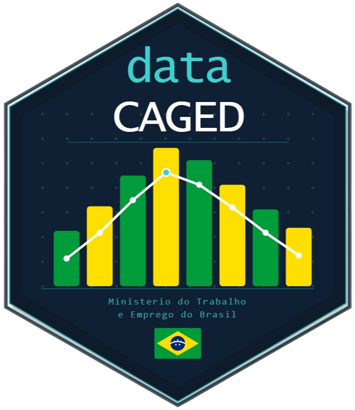

O pacote datacaged facilita o acesso aos microdados do CAGED
(Cadastro Geral de Empregados e Desempregados), cobrindo:
Novo CAGED (janeiro/2020 em diante): layout reformulado pelo MTE
CAGED antigo (até dezembro/2019): séries históricas (CAGEDEST_*.7z)
CAGED Ajustes (até dezembro/2019): correções retroativas do antigo
Os dados são baixados do repositório HuggingFace
(https://huggingface.co/datasets/alexsandroprado/caged),
extraídos de arquivos .7z e carregados em um banco DuckDB local
para consultas rápidas com SQL ou dplyr.

library(datacaged)
# Baixa, parseia e grava tudo em um comando
caged_load(
years = 2022:2023,
months = seq_len(12L),
db_path = "meu_caged.duckdb"
)
# Conecta e consulta
con <- caged_connect("meu_caged.duckdb")
dplyr::tbl(con, "caged_mov") |>
dplyr::filter(uf == 35) |>
dplyr::count(competenciamov)Novo CAGED (2020+) e CAGED antigo (até 2019):
caged_load(): pipeline completo (download -> parse -> DuckDB)
caged_download(): só baixa os arquivos .7z
caged_parse(): lê e normaliza um arquivo .7z
caged_parse_batch(): lê e normaliza múltiplos arquivos .7z
caged_to_duckdb(): grava um data.frame no banco
caged_connect(): abre conexão com o banco DuckDB
caged_info(): lista tabelas e registros disponíveis no banco
CAGED Ajustes (correções retroativas até 2019):
caged_adjustments_load(): pipeline completo para o CAGED Ajustes
Utilitários:
caged_status(): verifica se o repositório HuggingFace está acessível
caged_hf_files(): lista competências disponíveis no repositório HuggingFace
| Tabela | Fonte | Período |
caged_mov | CAGEDMOV*.7z | Jan/2020+ |
caged_for | CAGEDFOR*.7z | Jan/2020+ |
caged_exc | CAGEDEXC*.7z | Jan/2020+ |
caged_antigo | CAGEDEST_*.7z | 1992–Dez/2019 |
caged_ajustes | CAGEDEST_AJUSTES_*.7z | 1992–Dez/2019 |
Useful links: